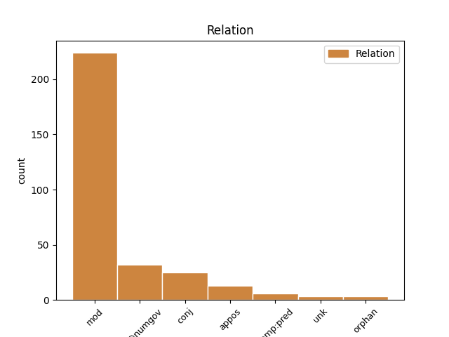
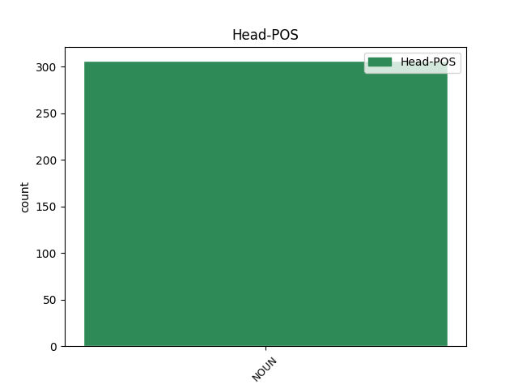
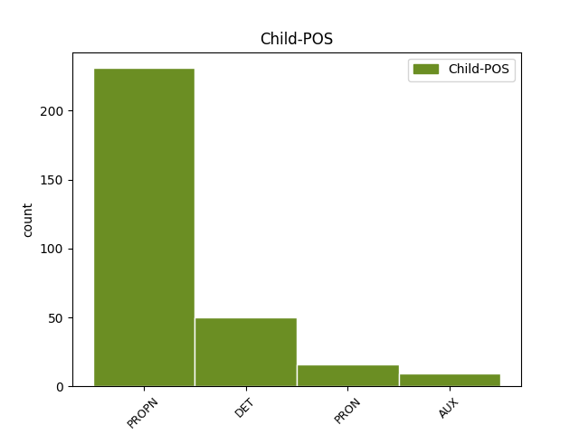

Distribution of features within this leaf



Agreement Rules sorted by frequency.
- When the dependent token is the modifer(mod) of the head token, and the head token is NOUN and the dependent token is PROPN.
1 Boj boj NOUN SSis1 Animacy=Inan|Case=Nom|Gender=Masc|Number=Sing 0 _ _ _
2 pavúka _ _ _ _ 0 _ _ _
3 Hanibala hanibal PROPN SSms2:r Animacy=Anim|Case=Gen|Gender=Masc|Number=Sing 1 mod _ _
4 s _ _ _ _ 0 _ _ _
5 ľuďmi _ _ _ _ 0 _ _ _
1 Lúčne _ _ _ _ 0 _ _ _
2 svetielko _ _ _ _ 0 _ _ _
3 sa _ _ _ _ 0 _ _ _
4 stratilo _ _ _ _ 0 _ _ _
5 v _ _ _ _ 0 _ _ _
6 tme _ _ _ _ 0 _ _ _
7 a _ _ _ _ 0 _ _ _
8 o _ _ _ _ 0 _ _ _
9 chvíľu _ _ _ _ 0 _ _ _
10 už _ _ _ _ 0 _ _ _
11 dievčatko _ _ _ _ 0 _ _ _
12 z _ _ _ _ 0 _ _ _
13 diaľky _ _ _ _ 0 _ _ _
14 počulo _ _ _ _ 0 _ _ _
15 veselú veselý PRON PAfs4 Case=Acc|Gender=Fem|Number=Sing|PronType=Prs 17 mod _ _
16 motýliu _ _ _ _ 0 _ _ _
17 pieseň pieseň NOUN SSfs4 Case=Acc|Gender=Fem|Number=Sing 0 _ _ _
18 . _ _ _ _ 0 _ _ _
1 Boli _ _ _ _ 0 _ _ _
2 tam _ _ _ _ 0 _ _ _
3 mravce mravec NOUN SSip1 Animacy=Inan|Case=Nom|Gender=Masc|Number=Plur 0 _ _ _
4 , _ _ _ _ 0 _ _ _
5 lykožrút _ _ _ _ 0 _ _ _
6 Fridolín fridolín PROPN SSms1:r Animacy=Anim|Case=Nom|Gender=Masc|Number=Sing 3 conj _ _
7 s _ _ _ _ 0 _ _ _
8 Buchtou _ _ _ _ 0 _ _ _
9 , _ _ _ _ 0 _ _ _
10 aj _ _ _ _ 0 _ _ _
11 rodinka _ _ _ _ 0 _ _ _
12 ploštíc _ _ _ _ 0 _ _ _
13 . _ _ _ _ 0 _ _ _
1 Ako _ _ _ _ 0 _ _ _
2 sa _ _ _ _ 0 _ _ _
3 hovorilo _ _ _ _ 0 _ _ _
4 , _ _ _ _ 0 _ _ _
5 túto _ _ _ _ 0 _ _ _
6 škandalóznu _ _ _ _ 0 _ _ _
7 informáciu _ _ _ _ 0 _ _ _
8 potvrdila _ _ _ _ 0 _ _ _
9 sama sám DET PFfs1 Case=Nom|Gender=Fem|Number=Sing|PronType=Emp 10 comp:pred _ _
10 herečka herečka NOUN SSfs1 Case=Nom|Gender=Fem|Number=Sing 0 _ _ _
11 , _ _ _ _ 0 _ _ _
12 ktorá _ _ _ _ 0 _ _ _
13 sa _ _ _ _ 0 _ _ _
14 nervovo _ _ _ _ 0 _ _ _
15 zrútila _ _ _ _ 0 _ _ _
16 . _ _ _ _ 0 _ _ _
1 Predal _ _ _ _ 0 _ _ _
2 mi _ _ _ _ 0 _ _ _
3 ich _ _ _ _ 0 _ _ _
4 za _ _ _ _ 0 _ _ _
5 cenu cena NOUN SSfs4 Case=Acc|Gender=Fem|Number=Sing 0 _ _ _
6 , _ _ _ _ 0 _ _ _
7 aká _ _ _ _ 0 _ _ _
8 bola byť AUX VLescf+ Aspect=Imp|Gender=Fem|Number=Sing|Polarity=Pos|Tense=Past|VerbForm=Part 5 mod _ _
9 uvedená _ _ _ _ 0 _ _ _
10 na _ _ _ _ 0 _ _ _
11 novinách _ _ _ _ 0 _ _ _
12 . _ _ _ _ 0 _ _ _
1 Ferrari _ _ _ _ 0 _ _ _
2 a _ _ _ _ 0 _ _ _
3 McLaren _ _ _ _ 0 _ _ _
4 majú _ _ _ _ 0 _ _ _
5 konkurenta konkurent NOUN SSms4 Animacy=Anim|Case=Acc|Gender=Masc|Number=Sing 0 _ _ _
6 - _ _ _ _ 0 _ _ _
7 Williams williams PROPN SSms1:r Animacy=Anim|Case=Nom|Gender=Masc|Number=Sing 5 appos _ _
1 Koberec _ _ _ _ 0 _ _ _
2 , _ _ _ _ 0 _ _ _
3 krištáľová _ _ _ _ 0 _ _ _
4 guľa _ _ _ _ 0 _ _ _
5 a _ _ _ _ 0 _ _ _
6 niekoľko niekoľko DET PUfp2 Case=Gen|Gender=Fem|Number=Plur|NumType=Card|PronType=Ind 7 det@numgov _ _
7 pomôcok pomôcka NOUN SSfp2 Case=Gen|Gender=Fem|Number=Plur 0 _ _ _
8 na _ _ _ _ 0 _ _ _
9 čarovanie _ _ _ _ 0 _ _ _
10 . _ _ _ _ 0 _ _ _
1 Niekedy _ _ _ _ 0 _ _ _
2 sa _ _ _ _ 0 _ _ _
3 objavovali _ _ _ _ 0 _ _ _
4 obyvatelia _ _ _ _ 0 _ _ _
5 Čarodejníckej _ _ _ _ 0 _ _ _
6 vily _ _ _ _ 0 _ _ _
7 , _ _ _ _ 0 _ _ _
8 všetkých _ _ _ _ 0 _ _ _
9 som _ _ _ _ 0 _ _ _
10 poznala _ _ _ _ 0 _ _ _
11 a _ _ _ _ 0 _ _ _
12 vedela _ _ _ _ 0 _ _ _
13 som _ _ _ _ 0 _ _ _
14 , _ _ _ _ 0 _ _ _
15 aký _ _ _ _ 0 _ _ _
16 bol _ _ _ _ 0 _ _ _
17 osud osud NOUN SSis1 Animacy=Inan|Case=Nom|Gender=Masc|Number=Sing 0 _ _ _
18 každého každý DET PAms2 Animacy=Anim|Case=Gen|Gender=Masc|Number=Sing|PronType=Tot 17 mod _ _
19 z _ _ _ _ 0 _ _ _
20 nich _ _ _ _ 0 _ _ _
21 . _ _ _ _ 0 _ _ _
1 Marginým _ _ _ _ 0 _ _ _
2 svätcom svätec NOUN SSms7 Animacy=Anim|Case=Ins|Gender=Masc|Number=Sing 0 _ _ _
3 bol _ _ _ _ 0 _ _ _
4 taliansky _ _ _ _ 0 _ _ _
5 spevák _ _ _ _ 0 _ _ _
6 Gianni _ _ _ _ 0 _ _ _
7 Morandi _ _ _ _ 0 _ _ _
8 , _ _ _ _ 0 _ _ _
9 mojím môj DET PFms7 Animacy=Anim|Case=Ins|Gender=Masc|Number=Sing|Number[psor]=Sing|Person=1|Poss=Yes|PronType=Prs 2 conj _ _
10 Angličan _ _ _ _ 0 _ _ _
11 Tom _ _ _ _ 0 _ _ _
12 Jones _ _ _ _ 0 _ _ _
13 . _ _ _ _ 0 _ _ _
1 Dal _ _ _ _ 0 _ _ _
2 som _ _ _ _ 0 _ _ _
3 jej _ _ _ _ 0 _ _ _
4 aj _ _ _ _ 0 _ _ _
5 nejaké _ _ _ _ 0 _ _ _
6 ruble _ _ _ _ 0 _ _ _
7 a _ _ _ _ 0 _ _ _
8 povedal _ _ _ _ 0 _ _ _
9 som _ _ _ _ 0 _ _ _
10 , _ _ _ _ 0 _ _ _
11 aby _ _ _ _ 0 _ _ _
12 za _ _ _ _ 0 _ _ _
13 ne _ _ _ _ 0 _ _ _
14 nakúpila _ _ _ _ 0 _ _ _
15 pivo pivo NOUN SSns4 Case=Acc|Gender=Neut|Number=Sing 0 _ _ _
16 a _ _ _ _ 0 _ _ _
17 ešte _ _ _ _ 0 _ _ _
18 niečo niečo PRON PFns4 Case=Acc|Gender=Neut|Number=Sing|PronType=Ind 15 conj _ _
19 iné _ _ _ _ 0 _ _ _
20 . _ _ _ _ 0 _ _ _
1 “ _ _ _ _ 0 _ _ _
2 Si _ _ _ _ 0 _ _ _
3 náš _ _ _ _ 0 _ _ _
4 hrdina hrdina NOUN SSms1 Animacy=Anim|Case=Nom|Gender=Masc|Number=Sing 0 _ _ _
5 , _ _ _ _ 0 _ _ _
6 Aladin Aladin PROPN SSms1:r Animacy=Anim|Case=Nom|Gender=Masc|Number=Sing 4 unk _ SpaceAfter=No
7 . _ _ _ _ 0 _ _ _
8 “ _ _ _ _ 0 _ _ _
Disagree Examples:
1 Spustili _ _ _ _ 0 _ _ _
2 novú _ _ _ _ 0 _ _ _
3 internetovú _ _ _ _ 0 _ _ _
4 televíziu televízia NOUN SSfs4 Case=Acc|Gender=Fem|Number=Sing 0 _ _ _
5 Braňa _ _ _ _ 0 _ _ _
6 Krála kráľ PROPN SSms2:rq Animacy=Anim|Case=Gen|Gender=Masc|Number=Sing 4 mod _ _
1 Od _ _ _ _ 0 _ _ _
2 tej _ _ _ _ 0 _ _ _
3 chvíle _ _ _ _ 0 _ _ _
4 vstupuje _ _ _ _ 0 _ _ _
5 do _ _ _ _ 0 _ _ _
6 hry _ _ _ _ 0 _ _ _
7 slovenská _ _ _ _ 0 _ _ _
8 časť časť NOUN SSfs1 Case=Nom|Gender=Fem|Number=Sing 0 _ _ _
9 Uhorska uhorsko PROPN SSns2:r Case=Gen|Gender=Neut|Number=Sing 8 mod _ SpaceAfter=No
10 . _ _ _ _ 0 _ _ _
1 Do _ _ _ _ 0 _ _ _
2 slovenských _ _ _ _ 0 _ _ _
3 častí časť NOUN SSfp2 Case=Gen|Gender=Fem|Number=Plur 0 _ _ _
4 Uhorska uhorsko PROPN SSns2:r Case=Gen|Gender=Neut|Number=Sing 3 mod _ _
5 sa _ _ _ _ 0 _ _ _
6 vtedy _ _ _ _ 0 _ _ _
7 utiahla _ _ _ _ 0 _ _ _
8 jedna _ _ _ _ 0 _ _ _
9 časť _ _ _ _ 0 _ _ _
10 českých _ _ _ _ 0 _ _ _
11 emigrovaných _ _ _ _ 0 _ _ _
12 protestantov _ _ _ _ 0 _ _ _
13 a _ _ _ _ 0 _ _ _
14 tu _ _ _ _ 0 _ _ _
15 našli _ _ _ _ 0 _ _ _
16 v _ _ _ _ 0 _ _ _
17 používaní _ _ _ _ 0 _ _ _
18 svoj _ _ _ _ 0 _ _ _
19 vlastný _ _ _ _ 0 _ _ _
20 spisovný _ _ _ _ 0 _ _ _
21 jazyk _ _ _ _ 0 _ _ _
22 presne _ _ _ _ 0 _ _ _
23 tak _ _ _ _ 0 _ _ _
24 , _ _ _ _ 0 _ _ _
25 ako _ _ _ _ 0 _ _ _
26 vo _ _ _ _ 0 _ _ _
27 svojej _ _ _ _ 0 _ _ _
28 českej _ _ _ _ 0 _ _ _
29 vlasti _ _ _ _ 0 _ _ _
30 . _ _ _ _ 0 _ _ _
1 Krman _ _ _ _ 0 _ _ _
2 si _ _ _ _ 0 _ _ _
3 bol _ _ _ _ 0 _ _ _
4 vedomý _ _ _ _ 0 _ _ _
5 , _ _ _ _ 0 _ _ _
6 že _ _ _ _ 0 _ _ _
7 meno meno NOUN SSns4 Case=Acc|Gender=Neut|Number=Sing 0 _ _ _
8 Slovákov slovák PROPN SSmp2:r Animacy=Anim|Case=Gen|Gender=Masc|Number=Plur 7 mod _ _
9 treba _ _ _ _ 0 _ _ _
10 aj _ _ _ _ 0 _ _ _
11 v _ _ _ _ 0 _ _ _
12 latinčine _ _ _ _ 0 _ _ _
13 odlišovať _ _ _ _ 0 _ _ _
14 od _ _ _ _ 0 _ _ _
15 všeobecného _ _ _ _ 0 _ _ _
16 názvu _ _ _ _ 0 _ _ _
17 slavi _ _ _ _ 0 _ _ _
18 a _ _ _ _ 0 _ _ _
19 vytvoril _ _ _ _ 0 _ _ _
20 nové _ _ _ _ 0 _ _ _
21 slovo _ _ _ _ 0 _ _ _
22 slovacii _ _ _ _ 0 _ _ _
23 . _ _ _ _ 0 _ _ _
1 Štúrovský _ _ _ _ 0 _ _ _
2 nový _ _ _ _ 0 _ _ _
3 slovenský _ _ _ _ 0 _ _ _
4 spisovný _ _ _ _ 0 _ _ _
5 jazyk _ _ _ _ 0 _ _ _
6 má _ _ _ _ 0 _ _ _
7 niekoľko niekoľko DET PUns4 Case=Acc|Gender=Neut|Number=Sing|NumType=Card|PronType=Ind 8 det@numgov _ _
8 vrstiev vrstva NOUN SSfp2 Case=Gen|Gender=Fem|Number=Plur 0 _ _ _
9 . _ _ _ _ 0 _ _ _